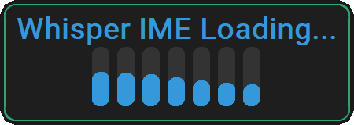
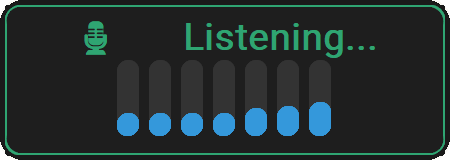
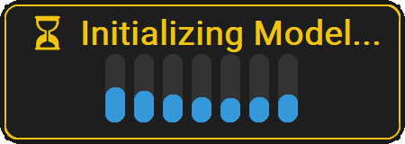
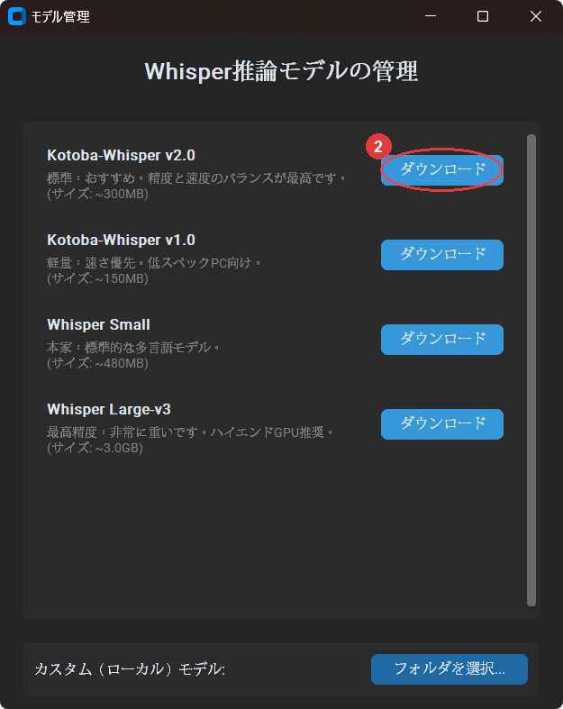
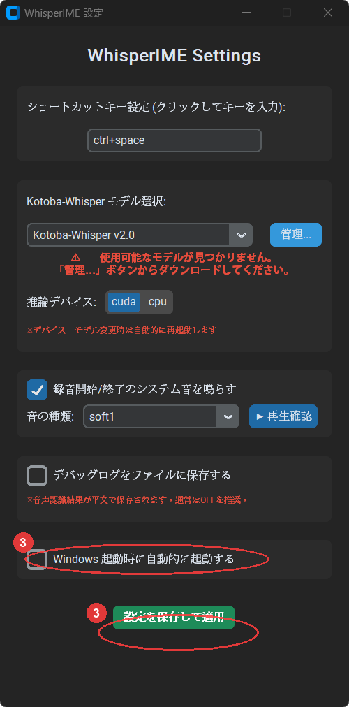

Windows のあらゆるアプリに、AI音声認識をホットキー一発で。
日本語に強い Kotoba-Whisper を、GPU 加速で最速動作。



インストーラーを実行するだけ。難しい設定は一切不要です。
インストーラー版またはZIP版を展開して起動。初回はモデル管理画面が自動で開きます。
モデル管理画面で推奨の Kotoba-Whisper v2.0 の「ダウンロード」を押して完了を待ちます。
必要であれば（おすすめ）「Windows 起動時に自動的に起動する」にチェックを入れて「設定を保存して適用」ボタンを押します。
※ インストーラー版はセットアップ時に自動起動が設定済みです。
入力したい場所にカーソルを置いてホットキーを押しながら話すだけ。離した瞬間にテキストが入力されます。

② モデル管理画面 — ダウンロードボタンを押すだけ

③ 設定画面 — 自動起動と保存
ブラウザ、テキストエディタ、Slack、メモ帳…クリップボード経由でどんなアプリにもテキストを流し込みます。
NVIDIA GPU 搭載機なら CUDA 12 を同梱。ドライバのみで即 GPU 推論。CUDA がない環境でも CPU に自動フォールバック。
録音中（緑）・解析中（黄）・初期化中（青）を色で即判別。音量ビジュアライザーでマイクの状態もリアルタイムに確認。
デフォルトは Ctrl+Space ですが、設定画面で任意のキーに変更可能。クリックしてキーを押すだけのシンプル操作。
音声認識はすべてローカル処理。音声データはインターネットに送信されません。一切ログにも残しません。
※ 設定でデバッグログを有効にすると音声内容がファイルに記録されます。
ZIP版はフォルダを丸ごとコピーするだけで動作。設定ファイルはアプリフォルダ内に保存され、環境を汚しません。
アプリ内からワンクリックでダウンロード。いつでも切り替えられます。
日本語特化モデル。精度・速度・サイズのバランスが最高。通常はこちらを推奨。
軽量版。低スペックPCやCPU専用環境での速度を重視する場合に。
OpenAI公式の多言語モデル。日本語以外も認識したい場合に。
最高精度。ハイエンドGPU（VRAM 6GB以上）推奨。
※ CTranslate2 形式のカスタムモデルも「フォルダを選択」から追加可能です。
リアルタイム音声入力ソフトウェアとして Kotoba-Whisper に対応しているのは、現状 WhisperIME のみ。（文字起こし専用ソフトを除く）
量子化（float16/int8）により通常の Whisper より大幅に高速。メモリ使用量も削減。
cublas64_12.dll 等の必要な CUDA DLL をすべて同梱。追加での環境構築不要、本アプリのみで GPU 動作。
録音中以外はマイクを一切使用しません。プライバシーに配慮した設計です。
どんなアプリでも Ctrl+V 貼り付けで動作。テキストフィールドを持つすべてのソフトに対応。
*1 著者調べ（2026/03/21）
v1.0 — Windows 10 / 11 (64bit) 対応
初回起動後、モデル管理画面から Kotoba-Whisper v2.0（約300MB）をダウンロードしてください。